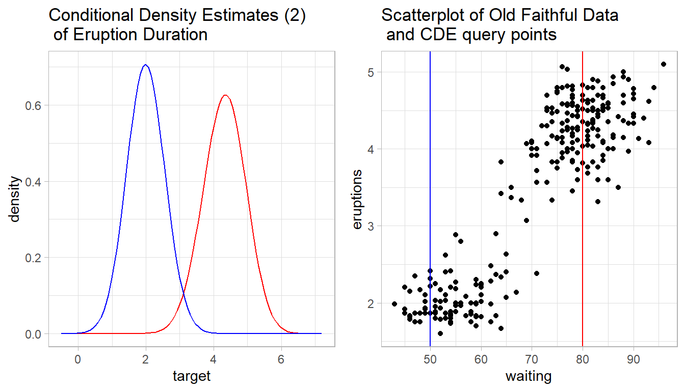
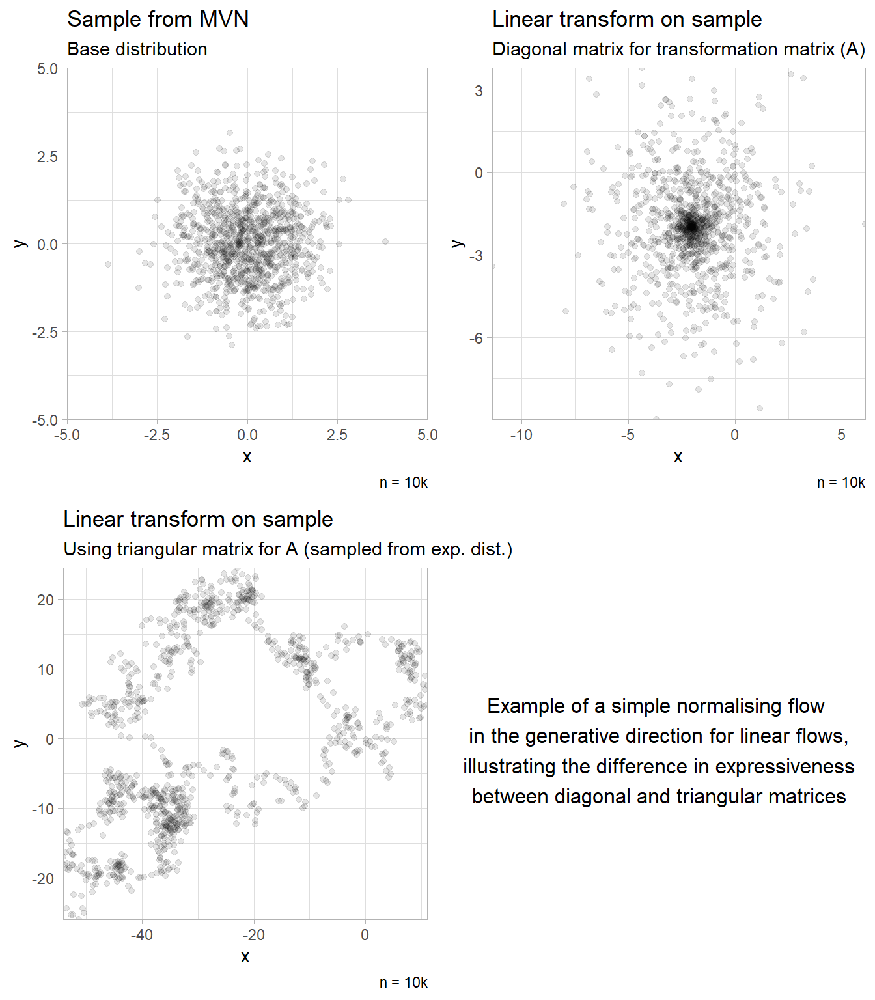

An Exploration of Normalising Flows using Conditional Density Estimation
Matthew Skiffington
@mattskiff_
mks29@students.waikato.ac.nz
Department of Computer Science, University of Waikato
Introduction
The World Health Organisation estimates 150,000 people die from climate change already, with much of this concentrated in Southern and Sub-Sarahan Africa. Projections include ~250,000 deaths p/y between 2030-50 and $2-4B of direct damage to health p/y by 2030 [1]. This is considered conservative by some and estimates vary considerably [2].
Statistical models in environmental science rely on assumptions such as gaussianity of model residuals or linear spatio-temporal relationships. This reliance presents risk in terms of the robustness and accuracy of estimation tasks in environmental modeling, which decision makers rely on.
Hence, there is a need to develop and transfer technology that better reflects the nature of uncertainty of estimation in environmental problems and can handle the complexity of the systems modeled. This poster explains how1 conditional density estimation with normalising flows can help meet this need.
Conditional Density Estimation
Figure 1: QR code for CDE animation
\[ \]
Conditional density estimation is a task for which there are methods in statistics, machine learning and deep learning. It is a generalisation of conditional mean estimation often performed with MLR. However, in CDE, instead of predicting a point estimate \(\hat{y}\) and generated a confidence or credible interval \(\hat{y}\pm CI\), we are instead concerned with predicting the full conditional density \(p(y|x)\) of the data for a given query point \(x\), thus representing an improved form of uncertainty quantification. Figure 2 demonstrates kernel CDE [3] [4] using the old faithful greyser dataset via the hdrcde R package. Early CDE methods included KCDE and discretisation of the target variable via class probability estimators [5] (Figure 1). Modern methods for CDE include Random Forest-CDE [6], Mixture Density Networks [7] and GMMs [8].

Figure 2: Demonstration of KCDE estimates
Normalising Flows
Normalising flows are a recent class of models [9] that entail the use of a sequence of invertible, differentiable, probability transformations applied to a base distribution (typically a simple gaussian) in order to approximate the true data density, which may be skewed, multi-modal or complex (even discontinuous).
By the term normalising flows people mean bijections which are convenient to compute, invert, and calculate the determinent of their Jacobian.
The number of layers corresponds to the expressiveness of the trained distribution, as does the class of model (figure 3. Normalising flows came to prominence for their relative efficiency in both generative sampling and density evaluation. In terms of generative modeling, NFs fit alongside VAEs and GANs. However, VAEs and GANs are not generally efficient in terms of density evaluation.
\[ \]

Figure 3: Expressiveness of NFs varies by class of model
Normalising flows are trained by minimising the KL-divergence via standard optimisation techniques, like SGD. The chronology of models using NFs is shown in Figure . There are three properties of concern when designing NFs:
- Efficiency
- Expressiveness
- Invertibility
In ML/DL
Practically:
Combining NFs with CDE
This intersection is a natural extension of progress in the area CDE and NFs. Some work already exists, such as CDE with Bayesian NFs [10], [@],[@], as a section describing CDE using MAFs [11] but progress has been limited by the following factors:
- Computational difficulty of scaling NFs to large data sets. For example, the latest continuous normalising flows models are restricted to usage on comparatively small benchmark sets
- Few practical applications of CDE in mainstream environmental science
- DL focus is often in areas of traditional strength for the field, such as image data
CDE has found use in finance [12], astropysics [13], environmental science [7], neurodynamics [14], genetics [15] and sociology [10].
Abbreviations
CDE / ML / DL / MLR / VAEs / GANs / KL / GMMs
References
[1]
World-Health-Organization and others, “Quantitative risk assessment of the effects of climate change on selected causes of death, 2030s and 2050s,” 2014.
[2]
R. Parncutt, “The human cost of anthropogenic global warming: Semi-quantitative prediction and the 1,000-tonne rule,” Frontiers in psychology, vol. 10, p. 2323, 2019.
[3]
D. M. Bashtannyk and R. J. Hyndman, “Bandwidth selection for kernel conditional density estimation,” Computational Statistics & Data Analysis, vol. 36, no. 3, pp. 279–298, 2001.
[4]
M. Rosenblatt, “Conditional probability density and regression estimators,” Multivariate analysis II, vol. 25, p. 31, 1969.
[5]
E. Frank and R. R. Bouckaert, “Conditional density estimation with class probability estimators,” in Asian conference on machine learning, 2009, pp. 65–81.
[6]
T. Pospisil and A. B. Lee, “Rfcde: Random forests for conditional density estimation,” arXiv preprint arXiv:1804.05753, 2018.
[7]
M. Carney, P. Cunningham, J. Dowling, and C. Lee, “Predicting probability distributions for surf height using an ensemble of mixture density networks,” in Proceedings of the 22nd international conference on machine learning, 2005, pp. 113–120.
[8]
N. Gilardi, S. Bengio, and M. Kanevski, “Conditional gaussian mixture models for environmental risk mapping,” in Proceedings of the 12th IEEE workshop on neural networks for signal processing, 2002, pp. 777–786.
[9]
I. Kobyzev, S. Prince, and M. Brubaker, “Normalizing flows: An introduction and review of current methods,” IEEE Transactions on Pattern Analysis and Machine Intelligence, 2020.
[10]
B. L. Trippe and R. E. Turner, “Conditional density estimation with bayesian normalising flows,” arXiv preprint arXiv:1802.04908, 2018.
[11]
G. Papamakarios, T. Pavlakou, and I. Murray, “Masked autoregressive flow for density estimation,” arXiv preprint arXiv:1705.07057, 2017.
[12]
J. Rothfuss, F. Ferreira, S. Walther, and M. Ulrich, “Conditional density estimation with neural networks: Best practices and benchmarks,” arXiv preprint arXiv:1903.00954, 2019.
[13]
A. L. Rojas, C. R. Genovese, C. J. Miller, R. Nichol, and L. Wasserman, “Conditional density estimation using finite mixture models with an application to astrophysics.” Carnegie Mellon University, Pittsburgh, USA.[Online]. Available: http ., 2005.
[14]
P. J. Gonçalves et al., “Training deep neural density estimators to identify mechanistic models of neural dynamics,” Elife, vol. 9, p. e56261, 2020.
[15]
X.-F. Wang and D. Ye, “Conditional density estimation in measurement error problems,” Journal of multivariate analysis, vol. 133, pp. 38–50, 2015.
Poster produced via the posterdown package. The code to reproduce this poster is at https://github.com/MattSkiff/nf_cde_poster.↩︎